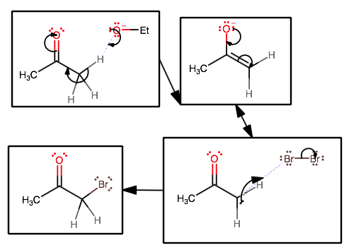
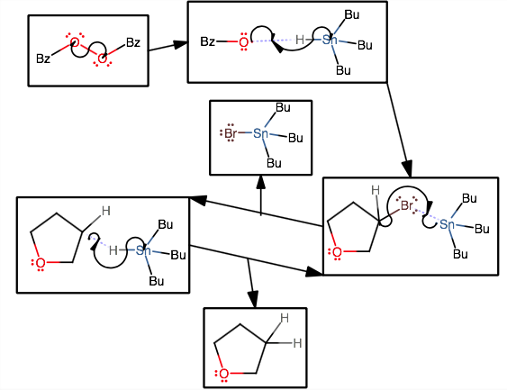
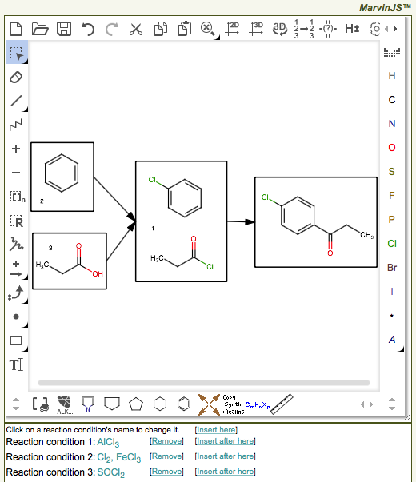

Any ACE instructor can author his or her own questions or modify database
questions. If you modify a database question, the changes will propagate into
all of your courses, but not any other instructor's courses, so they will be
visible to you and your students but no others. Likewise, if you author a
question from scratch, the question will be visible only to you and students
in your courses. (Exception: If another instructor designates you
as a coinstructor of a course, you may assign the work you do in an authoring
session to that instructor. In this case, the work that you do will be visible
only to students in the courses created by your coinstructor.) However, you
may share your questions with other instructors if you
wish to do so.
Most instructors modify database questions simply to reword the question
statement or feedback more to their taste. Occasionally, however, an
instructor will find an error — a correct question marked as incorrect,
or vice versa, or feedback completely irrelevant to a particular response.
If you find an error, by all means, feel free to correct it yourself, but
please contact Bob Grossman
to alert him to the error so he can correct it in the database.
Some instructors are more ambitious, wanting to author their own
questions in ACE. Authoring questions in ACE is an art. As such, learning how
to do it requires practice and patience. We strongly suggest that
beginners find questions in ACE to use as models for new questions.
for complete-the-table questions,
table dimensions and (optional) row and column captions;
for clickable image questions,
the color of the mark showing where the user clicked;
for numeric questions, an optional
list of units, as well as an optional list of values to substitute
into the question statement for question randomization;
for draw-vectors questions,
the color of the vectors;
for equations questions,
equations to preload into the response collector;
The question statement is exactly what its name says it is. ACE will
save a question only if it has either a statement or a figure. ACE
formats the question statement automatically.
The question statements of fill-in-the-blank
questions require a special format.
If the question set in which a question resides has a common question
statement, then, when ACE displays any question in that set to a student,
it appends the common question statement to the beginning of the question's
own statement. If you are writing a series of questions that all use the
same statement, consider putting the entire series in its own question set
and writing a common question statement for the entire set. That way, you
don't need to write it out for every question, and, if you decide to change
it, the change will be effective in every question simultaneously.
Evaluators
An evaluator determines whether a student's response has a
particular property. The English description of evaluators usually begins,
"If the response...." ACE has almost fifty different kinds of evaluators
at this time, although ACE makes only a subset available for each question
type.
A question may have any number of evaluators.
The list of evaluators acts as a hierarchical sieve; that is,
ACE tests the response against each evaluator in order, and the first
evaluator that the response satisfies determines the student's grade
(between 0 and 1, set by the author except when the
complete-the-table evaluator
TableDiff, the mechanism
evaluator MechCounter,
or the multistep synthesis
evaluator SynthSteps calculates
it from the response) and feedback.
The feedback is what turns students' errors into learning opportunities,
so it is important to think carefully about how to write it. It is usually best
to tell the student what is wrong with the response he or she provided, not to
tell the student what the desired answer is or how to correct an incorrect
response. Furthermore, it is important to provide feedback even for correct
responses. Students sometimes arrive at the answer without quite knowing how
they did so, and good feedback for correct responses may help solidify
their skills. Just as it does question statements, ACE
formats feedback automatically.
Some evaluators generate feedback automatically,
appending the author-written feedback (if any) to the automatically
generated feedback. The feedback automatically generated by
MechFlowsValid,
SynthScheme,
and SynthSelective evaluators is usually
sufficiently descriptive that the author does not need to provide any
additional feedback.
Authors may combine evaluators logically to make a complex
evaluator. For example:
3
[W]
3.1 and (3.2 or 3.3)
3.1
If the number of C atoms is equal to 6
3.2
If the number of O atoms is equal to 1
3.3
If the number of N atoms is equal to 1
Authors choose a grade and write feedback only for the top level
of a complex evaluator (in the example, line 3). Authors may modify the
subevaluators (lines 3.1, 3.2, and 3.3) or change the logic of
combining them. If a subevaluator generates automatic feedback, then
the combined evaluator will return that automatic feedback if the
subevaluator is the last individual expression of an OR expression
or the first individual expression of an AND expression.
Because the list of evaluators acts as a hierarchical sieve,
the order in which an author lists evaluators can be very important.
ACE does not use evaluators subsequent to the satisfied one to
evaluate the response. Consequently, if evaluator 1 is, "If the total charge
on the response is not 0," then an author can assume that subsequent evaluators
will encounter no response with a positive or negative total charge.
Formatting text in ACE
Because we designed ACE for organic chemistry, ACE recognizes common
organic chemistry expressions in unformatted or lightly formatted text
and formats them appropriately.
For example, when an author types "C5H5^- does SN2", ACE displays
"C5H5– does SN2" to users.
ACE applies its
formatting rules to question statements, feedback, ordering/ranking
and multiple-choice options, fill-in-the-blank pulldown menus, structure names,
and the titles of assignments. Authors who wish to learn more about
ACE's formatting rules should consult
this public-access page. It has an interactive
feature that allows authors to type various expressions and see how ACE will
format them.
ACE does not apply formatting to draw-vectors or equations questions,
as these questions are used for subjects other than organic chemistry.
Many evaluators in ACE compare
the structure or structures in a student's response to one or more structures
provided by the author. Authors can easily test, or choose not to test,
whether the structures in the response have a particular stereochemical
configuration.
MarvinJS
has four single-bond types to indicate tetrahedral stereochemistry: bold,
hashed, wavy, and straight. The first two specify configuration as R or S,
the third specifies a mixture of R and S, and the last leaves the
configuration unspecified. (Note: In three-dimensional structures,
Marvin uses the structure's 3D coordinates to determine configurations.
It ignores bold, hashed, and wavy bonds.)
Authors specify double bond stereochemistry by the physical coordinates of the
substituents of the double bond. Marvin provides three ways for an author to
indicate unspecified double-bond configuration:
a wavy bond from a double-bond atom to a substituent;
a 180° bond angle at a double-bond atom;
Marvin's special "double cis or trans" bond.
The stereochemistry matching rules are:
If a tetrahedral stereocenter or double bond in an author's structure
has a specified configuration, then the configuration of the
corresponding tetrahedral stereocenter or double bond in
the student's structure must be the same for the two structures to match.
If a tetrahedral stereocenter or double bond in an author's structure
has an unspecified configuration, then the configuration of the
corresponding tetrahedral stereocenter or double bond in
the student's structure has no bearing on whether the structures match.
All evaluators
that compare author structures to student structures (except the
skeletons
mode of Contains) use these matching rules.
The most frequently used evaluators for this purpose are
Is and Contains,
but the rules also apply to MapProperty,
MechProdStartIs, and a few others.
If a student's response should have a particular configuration at a
stereocenter, it
is useful to test both for particular configurations as well as for no
configuration at all. For example, if the student is supposed to draw
(S)-2-butanol, it is useful to write a correct-response evaluator for
(S)-2-butanol and incorrect-response evaluators for (R)-2-butanol,
(RS)-2-butanol (wavy bond), and 2-butanol with
no configuration specified. Each incorrect-response evaluator
should have different feedback,
because the intellectual error that the student has made in each case is
different. It is important to remember that the order of the evaluators
matters. If the unspecified 2-butanol evaluator comes first, then no response
will satisfy the (R)- and (RS)-2-butanol evaluators, because
any response that would have satisfied one of those evaluators would have already
satisfied the unspecified 2-butanol evaluator. The unspecified-configuration
evaluator should always follow the specified-configuration evaluators.
Authors should also note the flag in the Is
evaluator that allows them to determine how many times a particular structure
or its enantiomer appears in a response. This flag is especially useful
in draw-the-product questions when the reaction is diastereoselective but not
enantioselective.
One of the evaluators available for many question types
is Contains, which determines how many
compounds in the response contain a
substructure or skeleton drawn by the author.
Compound A contains a substructure S if each of the following
conditions is satisfied.
Every atom and bond in S is present in A. (Hydrogen atoms
in S must be explicit for ACE to search for them in A, but
implicit H atoms in S may be explicit or implicit in A.)
Each bond in S has the same
order as the corresponding bond in A.
The question author specifies whether charges, isotopes, or radical states
indicated in S may differ from those in A.
Compound A contains a skeleton S if each of the following
conditions is satisfied.
Every atom and bond in S is also present in A. These atoms and
bonds in A are called "skeletal". (Hydrogen atoms
in S must be explicit for ACE to search for them in A, but
implicit H atoms in S may be explicit or implicit in A.)
Each skeletal bond in A has the same order as or a higher order than the
corresponding bond in S. (ACE regards double and aromatic bonds as identical
for this purpose.)
For every skeletal C atom in A that is attached to another C atom,
both the bond and the latter C atom are skeletal.
(In other words, no skeletal C atom in A may be attached to a
nonskeletal C atom, and every bond between skeletal C atoms in A must be
present in S.)
The question author specifies whether charges, isotopes, or radical states
indicated in S may differ from those in A.
If you wish to see whether a particular substructure is contained in a
response, and you wish to exclude substitution at a particular atom in the
substructure, draw explicitly all the H atoms attached to that atom.
One very useful feature of the Contains
substructure search is that you may search for special atom and bond types such
as "any" atoms, aromatic or nonaromatic C, single-or-double bonds, etc. See the
JChem
query guide for more information.
We have created an interactive Web page
where you can draw a substructure or skeleton, enter various responses,
and see which responses contain the substructures or skeletons.
In a Lewis structure question, a student responds not with
ACE's standard structure-drawing program,
MarvinJS,
but with a stripped-down version that we wrote
ourselves, which we call LewisJS. LewisJS
does not highlight valence errors or show automatically
the appropriate number of H atoms on heteroatoms, and, although it is
now possible to indicate stereochemistry in LewisJS, ACE always
ignores it. However, LewisJS has one key
feature that MarvinJS lacks, and that is the ability to add
any number of unshared electrons to each atom in the structure.
ACE provides the following evaluators for
Lewis structure questions.
LewisIsomorph determines,
"If a Lewis structure response
is (or is not) identical to the Lewis structure provided by
the author...." All atoms, bonds, charges, and unshared electrons must match
exactly. ACE ignores any stereochemistry.
Is determines, "If no (or exactly one)
compound in the response is
identical to the author's compound,
either enantiomer of it,
or a resonance structure of it,
or has the same σ-bond network...."
(This evaluator has six ways that the number can be measured, but the only ones
of interest for Lewis structure questions are "no" or "exactly one".)
The σ-bond network option is especially useful for Lewis structure questions.
However, this evaluator cannot assess the unshared electrons in a Lewis JS
response. Authors using Is in a Lewis structure
question should check the "eschew normalization" option; otherwise, ACE is
likely to identify different resonance structures as identical.
LewisValenceTotal determines,
"If the total number of valence electrons in a Lewis structure response
equals (or does not equal) the number calculated from the structure
and formal charges...."
LewisFormalCharge determines,
"If any (or no) atoms in a Lewis structure response have an incorrect formal
charge...." The evaluator calculates the appropriate formal charge from the
element's group number and its number of bonds and unshared electrons.
LewisOuterNumber determines,
"If the number of electrons in the outer shell of every atom
in a Lewis structure response is (or is not) within the maximum
(usually 8),
OR if the number of electrons in the outer shell of any (or every)
atom of element X (or any element) in a Lewis structure response is
a number...."
LewisElecDeficientNumber determines,
"If the number of electron-deficient atoms of a particular element (or
any element) in a Lewis structure response is
a number...."
HasFormula determines, "If the formula of the
response is (or is not)...."
We have found the following order of evaluators useful when writing Lewis
structure questions.
Use LewisIsomorph to see if the response
is correct.
Use LewisIsomorph to see if the student
merely forgot to add in the unshared electrons.
Use HasFormula to see if the formula is
incorrect.
Use Is to see if the σ-bond network
of the response is incorrect.
Use LewisValenceTotal to see if the
student has placed the incorrect total number of electrons (bonds + unshared electrons)
on the structure.
Use LewisOuterNumber to see if the student
has violated the octet rule.
Use LewisFormalCharge to see if any atoms
have an incorrect formal charge.
At this point, if the student's response has still not satisfied any
evaluators, it is a proper resonance structure of the correct answer.
Use LewisIsomorph or
LewisElecDeficientNumber to see how
the student's resonance form differs from the correct
answer, and craft feedback accordingly. For example, you may wish the student
to draw the best resonance structure of an iminium ion, and the student may have
drawn the C(+) form.
The original, and still by far the most abundant, ACE question type is the
skeletal structure question. Students use MarvinJS to draw one structure or
a small number of structures. Skeletal structure questions can cover topics
such as:
nomenclature ("Draw 3-methyloctanoic acid.");
stereochemistry ("Draw all stereoisomers of 1,3-dimethylcyclopentane.");
reactions ("Draw the major product expected from the following reaction.");
spectroscopy ("What compound gives rise to these spectra?");
simple retrosynthesis ("What alkyl bromide would you use to make this ether?").
ACE provides the following evaluators for
skeletal structure questions.
Is determines, "If
compound in the response is identical to the author's compound,
either enantiomer of it,
or a resonance structure of it,
or has the same σ-bond network...."
Some comments:
Any charges in the author's structure or the response must be
present in the other for a match to occur.
By default, any isotopes in the author's structure or the response
must be present in the other for a match to occur; however, if you turn on the
"isotope-lenient" flag, then specified isotopes in the response will match
to atoms of the same element in the author's structure in which the isotopes
are not specified.
Stereochemical configurations must match as described
here.
Authors may choose to eschew normalization. Normalization carries out the
following steps on both the student's response and the author's structure to
ensure that equivalent structures match:
converts the bonds of aromatic rings to "toilet bowls";
ungroups shortcut groups such as Ph and Ac;
removes spin state information from divalent and trivalent radicals;
converts ylides written in their X+–Y–
resonance form to the X=Y resonance form;
inverts the direction of stereo bonds when the student has placed the
wide end at the stereocenter and the narrow end at a nonstereocenter.
Normalization has no
effect when the author is comparing σ-bond networks only.
Contains
determines, "If
compound in the response contains the
substructure or skeleton drawn by the author...."
NumMols
determines, "If the total number of molecules or number of
distinct molecules in the response is
a number...."
Weight determines, "If the
number of compounds whose
is
a weight ± tolerance is
a number...;"
Atoms
determines, "If the number of molecules, whose
atoms of a particular element in the response
a number,
another number;"
OR, "If the
atoms of a particular element in the response
a number...."
You can specify a particular isotope (e.g., D or 13C). If you don't specify
a particular isotope, ACE will count all isotopes of that element toward the
total.
Charge determines, "If the
number of compounds whose total charge is
a number is
another number...;"
OR, "If the total charge of the response is
a number...."
FnalGroup determines, "If the
number of compounds that have
a number of instances of a functional group is
another number...;"
OR, "If the number of instances of a functional group in
the response is
a number...."
The author chooses from a list of about 140 functional groups. Try our
functional group finder
to see which functional groups ACE can detect and how ACE defines them.
Rings determines, "If the
number of compounds whose number of rings is
a number is
another number...;"
OR, "If the total number of rings
in the response is
a number...." This evaluator calculates the smallest
set of smallest rings, the value that an organic chemist would use.
HasFormula determines, "If the formula of
the response is (or is not) a formula written by the author, or if the number
of compounds in the response that have a formula written by the author is
a number...." The formula
may include wild cards, as in C6H10O*,
where * indicates any number, including zero. ACE will include any D or T
atoms of the response in the H atom total if and only if the author's formula
refers explicitly to D or T. To exclude the possibility of any D or T atoms
in a structure, add "D0" or "T0" to the end of the formula. ACE does not
accept any other isotopes in the formula.
Chiral
determines, "If
of the enumerated stereoisomers of the response are
...." ACE generates enumerated stereoisomers from a response molecule
by elaborating stereocenters with unspecified configurations into all possible
stereoisomers. (Configurationally specified stereocenters remain constant.)
If there is more than one response molecule, ACE enumerates the stereocenters of
all of them and determines the total number of chiral and achiral compounds.
Is2DChair determines, "If
compound in the response is a 2D representation of a chair-shaped compound
that is identical to the author's compound or its enantiomer..."
Essentially, ACE measures the angles formed by substituents and ring
atoms and assigns axial or equatorial orientations accordingly.
ACE may generate automatic feedback if it finds a group that it cannot
assign as axial or equatorial.
Any response satisfies the HumanReqd
evaluator. When ACE encounters this evaluator, it marks the
response as needing an instructor to assign a grade. The instructor can see
in the gradebook which responses he or she needs to grade. The instructor
clicks on the student's name and uses alter to assign
a grade and, optionally, add a comment. Use this evaluator only when there are
no alternatives!
For most skeletal structure questions, we find that it is most
useful to make the first two incorrect-response evaluators,
If the number of molecules in the response is not equal to 1 ...
If the total charge is not equal to 0 ...
Beyond that, authors should think about the characteristics that a correct
response would have and write evaluators that test for the absence of each
of these properties in turn.
The R-group question is a special kind of
skeletal structure,
mechanism, or
synthesis
question that allows instructors
to deliver a different version of the same question to each student.
An R-group question has the following features:
The author has selected "Skeletal structure", "Mechanism",
or "Multistep synthesis" from the
question type menu and has checked the "uses R groups" checkbox;
the question has at least one figure, and Figure 1 contains one or
more numbered generic R groups (R1, R2, etc.);
there is one question datum for each numbered generic R group
in Figure 1, indicating what groups ACE may substitute for it.
When an author selects the "uses R groups" checkbox, ACE makes visible the
question data table. The author should add as many question data as there are
numbered generic R groups
in Figure 1. For each numbered generic R group, the author should select one or more
R-group classes, such as "small alkyl groups" or "acyl groups". When a student
first views a question, ACE replaces each numbered generic R group in the
student's Figure 1 with one of the groups in the R-group classes that the
author has selected for that particular Rn. We call the groups
now in Figure 1 instantiated R groups. The instantiated R groups
subsequently remain fixed for that student and that question.
Authors should write evaluators for R-group questions
as if the student's response will contain the original generic R group.
ACE will automatically account for the instantiated R groups that the
student's response ought to contain when it evaluates it.
For example, if the question is, "Draw the product of the following reaction,"
and Figure 1 contains
"R1CH2Br + NaOCH2R2
→ ", then the evaluator for
the correct response would be, "If the only compound in the response is
R1CH2OCH2R2...", and
an evaluator for the incorrect formula would read, "If the response does not
have the formula C2H4O..."
(the formula omits the Rn groups).
The only evaluator that does not account for
the instantiated R groups that ought to be present in a student's response
is the Contains evaluator.
Authors of R-group questions should search for
substructures and skeletons only when the search will give
the same result regardless of which instantiated R group ACE may have chosen
in a particular case.
ACE can also generate numeric questions algorithmically.
ACE allows authors to ask questions about chair conformations and
conformations about a C(sp3)–C(sp3)
bond.
ACE provides two ways for students to
draw 3D chair conformations and one way to draw them as 2D projections.
If you check the "uses 3D structures" box on the question-authoring page,
students can use one of the chair
templates on the
MarvinJS toolbar. These templates
already contain the 3D coordinates, so when a student adds explicit H
atoms (H± button), MarvinJS places the H atoms
in the correct axial and equatorial positions. This technique allows
the structure to have more than one six-membered ring, because the
template contains hidden information that marks the ring as the one
whose conformation should analyze.
A student may instead draw cyclohexane in two dimensions, add the
explicit H atoms, and then do a molecular mechanics
minimization by pressing the Clean 3D button. The student will then
want to rotate the structure by pressing the Rotate 3D button, clicking
and holding on the canvas, and dragging the cursor. When the
student has achieved a satisfying view, the student should cut the structure and
paste it back to retain the view after each response submission.
With this technique, it is important that the question contain only one
cyclohexane ring, or ACE will not know which ring's conformation to analyze.
You can require that students draw a 2D projection of a chair,
like they would draw on paper. If you want them to draw a 2D projection, do
not check the "uses 3D structures" box on the question-authoring page.
Although there is no way to prevent a student from doing a molecular
mechanics minimization of cyclohexane, the 2D chair evaluator looks at
bond angles in the xy plane, so a 3D structure is unlikely to satisfy the
2D chair evaluator.
Here again, it is important that the question contain only one
cyclohexane ring, or ACE will not know which ring's conformation to analyze.
In the case of single-bond conformations,
students may use one of the perspective or Newman projection templates
provided by MarvinJS. The C atoms in the ethane template
are marked so that ACE knows to analyze the conformation about their bond.
Currently, ACE is able to analyze the conformations of
C(sp3)–C(sp3) bonds only.
Before determining whether the student has drawn the correct conformer,
you need to check first that he or she has drawn the correct configurational
stereoisomer. If the student will be drawing a 2D projection of a chair,
use Is2DChair to ascertain that the student
has drawn the correct configurational stereoisomer; otherwise,
use Is.
Important: Once a structure is in 3D, ACE ignores bold and
hashed bonds. To make these bonds have effect, the user must convert back to 2D
stereochemistry by pressing the Clean in 2D button.
ACE provides one evaluator,
ConformChair, for
analyzing chair conformations, and one,
ConformBond, for analyzing single-bond
conformations, as well as most of the evaluators for
skeletal structure questions.
In both conformation evaluators, the author must provide the name of the group
or groups whose orientation ACE must analyze. The group name must be either:
a shortcut group name that Marvin recognizes when you type it (such as
Me, iBu, or OPh); or,
a SMILES definition such as O (for OH),
Br, or C(C)C (for iPr).
(You can find the SMILES definition of a group by drawing it in
MarvinJSattached to Li, pressing the Export button (third button in northern
toolbar; its icon is an old floppy disk), and from the Format pulldown menu,
choosing SMILES. Delete the leading [Li] to
get the group's SMILES definition. Note that SMILES definitions usually omit H
atoms. ACE assumes that the first atom of the SMILES definition is attached to
the C of the cyclohexane ring or rotatable bond. This assumption will be valid
when you use the just-described method to craft your SMILES definition.)
ConformChair analyzes the number of times a
group is axial or equatorial on a particular ring, and
ConformBond determines the relative orientation
(eclipsed, gauche, etc.) of two groups, one on each atom of the C–C bond
that derives from the original ethane template.
To choose the ring whose conformation it will analyze,
ConformChair first looks for a
six-membered ring in which all of the ring atoms are invisibly marked
(i.e., that the student copied from the Templates menu.)
In the absence of that, it looks for any saturated cyclohexane ring. (Exocyclic
double bonds are permitted.) In the absence of that, it looks for
a saturated six-membered ring with one heteroatom, and, in the absence of that,
it looks for a saturated six-membered ring with any number of heteroatoms.
Your correct-response evaluator for a conformation question should be
complex: for example, "If the response is X or its enantiomer AND if the
response has one axial Br group...." If this evaluator is not satisfied, then
write incorrect-response evaluators that
test for various ways that the structure of the response may differ from X or
its enantiomer. For example, you may use Is to
test if the student has drawn an incorrect diastereomer, or if the student's
response has the wrong formula.
Your last evaluator in this section should be, "If the response is not X or its
enantiomer...." If the response does not satisfy this evaluator, then the
response must have the right structure, but be in the wrong conformation.
You can use the conformation evaluators to determine how the conformation might
be incorrect and provide appropriate feedback.
ACE may generate automatic feedback if it finds a group that it cannot
assign as axial or equatorial.
In an atom mapping or selection question, a student either selects one or
more atoms in a structure, or marks one or more atoms in a
structure with numbers between 1 and 99. ACE treats the selection of atoms
as equivalent to marking them with the number 1.
Most mapping questions requires students to use particular
numbers. For example, a question might ask a student to mark atoms with 1, 2, or 3,
depending on whether the atom is sp-, sp2-, or
sp3-hybridized. This kind of question is called an "exact map".
However, there are some mapping questions that require that atoms that
share a particular property have the same number, but it does not matter what
number it is. For example, a student might be asked to label H
atoms that are isochronous in the 1H NMR spectrum with identical
numbers, and anisochronous H atoms with different numbers. This kind of
question is called a "map pattern". If a question asks students to select
atoms, all selected atoms will be marked with the number 1, so there will be no
difference between the map pattern and the exact map.
ACE provides two evaluators,
MapProperty and
MapSelectionsCounter, for
analyzing mapping, as well as most of the evaluators for
skeletal structure questions. The evaluator
MapSelectionsCounter always calculates
a student's grade based on the extent to which ae student's
selections match the quthor's selections, adding or subtracting
an amount of credit chosen by the author for each match or mismatch.
If a structure contains shortcut groups,
MapProperty
and MapSelectionsCounter
ungroup them. If any
shortcut group has been mapped, the evaluator
places its map number on the atom of the group that is attached to
the rest of the structure. The evaluators
consider all implicit H atoms to be unmapped.
Take care if you are using 3D mode in mapping questions with multiple
structures. If mapping of one structure in the response converts
a meso structure into an asymmetric one, then the combination of the newly
asymmetric structure with a preexisting chiral structure can give
diastereomers, which may or may not match with one another.
Furthermore, JChem will assign
a configuration to a stereocenter, even if you draw the structure in such a way
that it appears to have an unspecified configuration, and even if you
include a wavy bond.
Mechanism questions are one of the two most complex types in ACE
(the other being multistep synthesis), and they are
certainly among the most difficult to author.
The first thing to realize about mechanism questions in ACE is that ACE does
not determine whether a mechanism response is "correct". Instead,
ACE determines whether a mechanism response violates any of the rules
that organic chemists have developed over the years about mechanisms. If a
mechanism response does not violate any rules, then ACE considers it to be
correct. This approach to mechanisms is necessitated by the fact that there
are often many correct ways to draw a mechanism — for example, with or without
particular resonance forms —
and even sometimes more than one acceptable mechanism, and we do not want
authors to have to enter every possibility into ACE.
To be more specific, an ACE mechanism question has a series of
incorrect-response evaluators
that determine whether a response violates any rules, followed by a
single correct-response evaluator, "If the number of C atoms is greater than 0...."
If a response satisfies none of the incorrect-response evaluators, it will
satisfy the last one, so it will be marked correct.
(An exception to this general approach is warranted if the mechanism is very short
and unambiguous. For example, if you have provided a student with starting materials
and products, and you want the student only to draw electron-flow arrows, you
can write a correct-response evaluator that evaluates whether the appropriate
compounds and electron-flow arrows are present in a stage of the mechanism.)
In general, a mechanism is correct if,
its form is correct:
every compound is inside a rectangle, and no rectangle is empty;
the rectangles are connected by reaction or resonance arrows in a linear or
cyclic topology (the latter may have a linear part pointing to one of the
rectangles in the cyclic part, as in the initiation part of a radical chain
mechanism);
every rectangle that points to another rectangle (and hence does not contain
only products) contains at least one electron-flow arrow;
if all of the arrows connecting boxes are resonance arrows, one terminal box
has no electron-flow arrows, and all others have at least one;
it arrives at the specified product;
at least one of the products of the electron-flow arrows in each step appears
in the subsequent step;
any compounds not produced by electron-flow arrows are starting materials
that are available in the reaction mixture;
particular key intermediates are present in the mechanism;
the mechanism breaks no heuristic rules,
such as "no SN2 at C(sp2)"
or "no good bases under acidic conditions".
Below is an example of a correctly drawn ACE mechanism for the
reaction, "acetone + EtONa + Br2 → bromoacetone".
Note that the student has omitted the EtOH and
Br– coproducts, as per the common convention, although
students may draw them if they wish, and a
question author may require students to draw them. Note also that the
student has chosen to draw the enolate in both resonance forms. ACE
would consider the mechanism to be correct if the student drew just one or
the other resonance form as long as the student still drew the
electron-flow arrows appropriately.

It can be difficult to draw mechanisms of free-radical chain reactions
in the proper form in ACE.
Here is an example of a correctly drawn radical chain mechanism for the
reaction, "3-bromoTHF + Bu3SnH + cat. (BzO)2
→ THF".

Note several aspects of this drawing:
The drawing begins with a short linear part (the initiation), and the last
box of the linear part points to a box in the cyclic part (the propagation).
This particular mechanism consists of only two propagation steps,
so the boxes in this part point to each other.
In this particular drawing, the student has chosen to draw the
stoichiometric products from the propagation steps (Bu3SnBr and THF)
in their own boxes outside of the cyclic part, with a separate reaction
arrow leading to them from the midpoint of the main reaction arrow of that step.
However, a student could equally well include
the Bu3SnBr product in the left-hand box of the propagation part
and the tetrahydofuran in the right-hand box of the propagation part.
(Of course, students may omit the coproduct Bu3SnBr if the
author of the question chooses not to write an evaluator that looks for it.)
The drawing omits the termination steps of the mechanism.
The electron-flow arrows of each step are bidirectional. Some
organic chemists draw one-electron arrows flowing in one direction only
and omit the electron-flow arrows pointing in the other direction, but
ACE does not understand this convention.
An author does not need to write an evaluator to determine whether the form
of a mechanism response is correct. ACE automatically evaluates the form of the
response when a student submits it. If ACE is unable to parse the response, it
provides appropriate feedback and may highlight the offending aspect of the
response (for example, a rectangle that contains no electron-flow arrows).
If a student submits an unparsable mechanism as a response to a question,
ACE does not count it as a "try".
The evaluators that ACE makes available to authors of mechanism questions
are as follows.
MechProdStartIs determines, "If
of the starting materials (or products) specified by the author are present among
the response starting materials (or products), or if the response starting
materials (or products)
the starting materials (or products) specified by the author...." This
evaluator defines a response product as a compound that has no
electron-flow arrows touching it, and a response starting material
as one that it is not produced by electron-flow arrows in prior steps.
MechProdStartProps determines, "If
of the response mechanism has the following
property...."
This evaluator allows the author to query features of the response mechanism's
starting materials and products in addition to their structures.
MechFlowsValid determines, "If, given certain
permissible starting materials,
the electron-flow arrows in every step lead to (or in any step do
not lead to) at least one of the compounds in the subsequent step...."
This evaluator also checks that the products of the electron-flow arrows do not
contain any valence errors (such as pentavalent C) or any half-bonds (from
improper use of one-electron arrows) and that all compounds not
generated by electron-flow arrows are permissible starting materials.
This evaluator will automatically generate feedback if the response satisfies
it and the evaluator is in its negative form ("... any step do not lead to ...").
ACE appends the author's feedback to the automatically generated feedback.
MechRule determines, "If a particular
heuristic rule is (or is not) violated
by the response...." This evaluator generates automatic feedback if it finds
a violation of either of two rules.
ACE appends the author's feedback to the automatically generated feedback.
MechSubstructure determines, "If the student's
response contains (or does not contain) both the substructures and the electron-flow
arrows drawn by the author?" The substructure may include atoms of unspecified
elements.
MechCounter determines, "If the number of
boxes, reaction arrows, or resonance and reaction arrows is
a number...."
An author may choose to reduce a student's grade by an amount
proportional to the difference between the
number of boxes, reaction arrows, or resonance and reaction arrows in the
response and the number chosen by the author.
MechTopology determines, "If the mechanism
is (or is not) linear (or cyclic)...."
MechInitiation determines, "If the mechanism
has (or does not have) a correctly drawn initiation part...." This evaluator checks
that no fragments derived from an initiator are found in the propagation part
of a chain mechanism.
MechEquals determines, "If the response
mechanism
the author's mechanism...." This evaluator should be used rarely, if ever. The
definition of "match" used by this evaluator is very strict. All compounds and
electron-flow arrows in the response mechanism must be present in the author's mechanism,
and vice versa. For example, consider the reaction of MeOH with CH3COCl under
acidic conditions. If the student omits the Cl– coproduct and the
author does not, or vice versa, the mechanisms do not match. If the student shows
Cl– or MeOH acting as a base to deprotonate the MeOH O atom after
it adds to the carbonyl C atom and the author does not, or vice versa, the mechanisms
do not match. If the student draws the C+–O–
resonance structure for the carbonyl group and the author does not, or vice versa,
the mechanisms do not match.
The skeletal structure evaluatorsIs,
Contains,
FnalGroup,
Atoms,
NumMols,
Charge,
and
HasFormula
are also available.
We have found the following order of evaluators useful for
mechanism questions.
Determine whether the specified product of the mechanism is actually present
in the response as a product.
Use MechProdStartIs to ask, "If, given these
products, not all are present in the response...." Include only products that
you would require a student to draw. For example, in the mechanism for RONa +
CH3I, you would probably not require a student to draw NaI or
I–.
Determine whether the student uses as starting materials all of the compounds
you expect the student to use.
If there is no ambiguity about the way that the student might draw any of the
starting materials, simply use MechProdStartIs to
ask, "If, given these starting materials, not all of them are present in the
response...."
Check the "resonance-permissive" box if the student may use any
resonance structure of the starting material.
On the other hand, if there is some ambiguity about the way that a student might
draw certain starting materials, you will need to use a compound evaluator. For
example, consider the reaction, Me2C=CH2 + HBr →
Me3CBr. The student may choose to draw the first step of the
mechanism with HBr or with just H+. In this case, the appropriate
evaluator structure is, "If, given these starting materials [isobutylene], not all
are present in the response,
OR if, given these starting materials
[H+ and HBr], none are present in the response,
OR if, given these starting materials
[Br– and HBr], none are present in the response...."
If any of these evaluators is satisfied, then the response must be incorrect.
If all are not satisfied, then this aspect of the mechanism is correct.
Use the MechRule evaluator to determine if
the class of mechanism is incorrect. For example, if the mechanism should be
polar, does the student use radicals? If the reaction conditions are acidic,
does the student generate strong bases?
Use the Is evaluator to determine if any
key intermediates are absent from the mechanism.
Use the MechFlowsValid evaluator to determine
if the response uses electron-flow arrows correctly and if all of the
compounds not produced by electron-flow arrows are permissible starting
materials. In this evaluator, you should
list every starting material that the student might permissibly use. For
example, if one of the starting materials is HBr, you should list HBr,
H+, and Br–.
Check the "resonance-permissive" box if the student may use any
resonance structure of the starting materials.
Use the MechSubstructure evaluator to
determine if there are any specific mechanistic steps that the student may have
incorrectly included or omitted. For example, you may want to look for a
concerted carbonyl-enol tautomerization or a four-centered TS for proton
transfer.
Use the MechRule evaluator to determine if
the student has broken any other relevant heuristic rules. For example, does
the student propose an SN2 substitution at an sp2-hybridized
C atom? Does the response have a multiply charged intermediate?
The last few incorrect-response evaluators should check for
violations of mechanism conventions such as the inappropriate use
or disuse of resonance arrows. We usually give 50% credit if the only error is
a convention violation.
Finally, use the Atoms evaluator to
determine if the response contains any C atoms. If it does, and it has not
satisfied any prior evaluators, it is correct.
Resonance structure questions that ask the student to draw electron-flow arrows
are a subset of mechanism questions.
In a typical resonance structure question, the author provides
two boxes connected by a resonance arrow, with a structure in one of the boxes,
and the student must draw both a good resonance structure and the electron-flow
arrows on the given structure that lead to the resonance structure.
We have found the following sequence of evaluators useful for resonance
structure questions.
Use Is to ascertain that the student did
not alter the given structure.
Use NumMols to ascertain that there are
two structures in the response.
Use Charge to ascertain that the total
charge of the response is twice that of the given structure.
Use HasFormula to ascertain that
both compounds in the response have the formula of the given structure.
Use Is to determine whether every
structure in the compound is identical to the given structure (i.e., whether
the student simply redrew the starting structure).
Use Is to determine whether every
structure in the response is the given structure or a resonance structure of
it. If not, the student has drawn a compound that is not a resonance
structure. (You may wish to use this evaluator twice in combination with
MechFlowsValid: once to see if the electron-flow
arrows correctly lead to the nonresonance structure, and once to see if they
do not.)
Use MechFlowsValid to determine whether the
student's electron-flow arrows lead to their resonance structure.
Use Is to determine whether the student
has not drawn the resonance structure you have asked them to draw.
Use MechRule to determine whether any atom
simultaneously receives and supplies unshared electrons.
Use Atoms to write a correct-response
evaluator, "If the number of C atoms is greater than 0...."
Multistep synthesis questions have several similarities to
mechanism questions.
Responses to both consist of boxed compounds connected in a
logical sequence by straight arrows.
ACE evaluates responses to both by checking for errors; if it finds none,
the response must be correct.
There are also major differences between multistep synthesis and mechanism
questions, as illustrated by the response reproduced below.
In mechanism questions, the respondent uses electron-flow arrows to
indicate how compounds in each step are transformed into compounds in the
subsequent step, whereas in multistep synthesis questions, the respondent uses
reaction conditions
that he or she chooses from a list of built-in reaction conditions
provided by ACE. In the example below, every
synthetic step has a reaction condition associated with it, but, if any stage
in a synthesis response does not have a
reaction condition associated with it, ACE applies the default reaction
condition, "[simply mix]". (If the number of a reaction condition does not
correspond to any of the numbers in the Marvin drawing, ACE simply
ignores it.)
Responses to mechanism questions must have either a linear or cyclic
(or mixed) topology, whereas multistep synthesis questions must have a
linear or linear-convergent topology. The example below has
linear-convergent topology, with two separate branches leading to the two
compounds that combine to give the target.
The algorithms for calculating the products of each mechanism step are
rigorously defined by convention, whereas the algorithms for calculating the
products of a synthetic reaction are not. It can be difficult even for a
knowledgeable chemist to predict the products of a reaction in every case;
it is that much more
difficult to write algorithms that allow ACE to predict the product for any
substrate exposed to particular reaction conditions, even given that the
compounds are unlikely to be very complex.
Multistep synthesis questions usually have many fewer evaluators than do
mechanism questions.

In general, a multistep synthesis is correct if,
its form is correct:
every compound is inside a rectangle, and no rectangle is empty;
the rectangles are connected by reaction arrows in a linear or
linear-convergent topology;
only one rectangle has no arrows pointing away from it, and it has only a
single arrow pointing to it;
it arrives at the specified synthetic target;
at least one of the calculated products of the reaction in each stage appears
in the subsequent stage;
any compounds not produced by reactions are starting materials
that fit the parameters defined by the question author;
the reaction in each stage is structure-, diastereo-, or enantioselective
for the compound in the subsequent stage;
the respondent does not synthesize any compounds that are defined as
permissible starting materials.
The author of a multistep synthesis question defines the permissible starting
materials separately from the evaluators. Permissible starting materials may be
specific compounds, may have a certain number of contiguous or total C atoms, may
have one or more particular functional groups, may or may not have a particular
formula, may have a certain number of
rings, may be uncharged and free of alkali metals and Mg, or may be free of other
metals of various kinds. The author may combine these
rules in any logical way. ACE considers all compounds chosen from the
reaction conditions menu to be permissible starting materials.
In synthesis questions that use R-groups, an author
should use great caution before defining a permissible starting material as one
that has no more than n contiguous C atoms, as ACE is unable to account
for variability among the sizes of the students' instantiated R groups when
determining whether a student's starting material is permissible.
The evaluators that ACE makes available to authors of synthesis questions
are as follows.
SynthTarget determines, "If the synthesis
arrives at the indicated target...."
SynthScheme determines, "If
the reaction conditions acting on compounds in every step lead to (or in any
step do not lead to) at least one of the compounds in the subsequent step...."
This evaluator also determines whether any compounds not produced by a reaction
of a previous step do not satisfy the author's rules about permissible starting
materials or are too unstable to be allowed as starting materials
(formyl halides, 1-haloalcohols, etc.). This evaluator automatically generates
feedback if the response satisfies it and the evaluator is in its negative form
("... any step do not lead to ..."). ACE appends the author's feedback to the
automatically generated feedback.
SynthSelective determines, "If the
reaction conditions acting on compounds in any step lead to (or in no steps
lead to) structural isomers (usually regioisomers), diastereomers, or
enantiomers of the compounds shown...." The question author chooses which
type of selectivity ACE should examine. Because we have been unable to
write reaction algorithms that predict the
correct product selectivity in all cases, this evaluator gives
the question author the option of excluding a particular synthetic reaction
from consideration if it appears in the synthesis. This evaluator will
automatically generate feedback if the response satisfies it and the synthetic
scheme is unselective for one of the above-mentioned reasons. ACE appends the
author's feedback to the automatically generated feedback.
SynthEfficiency determines, "If the synthesis
includes the preparation of compounds that are permissible starting materials...."
SynthOneRxn determines, "If the synthesis
includes a particular synthetic step...."
SynthStart determines, "If
of the starting materials specified by the author are present among
the response starting materials, or if the response starting materials
the starting materials specified by the author...." This
evaluator defines a response starting material
as one that it is not produced by the reaction of the prior step.
SynthSteps determines, "If the number of
linear or total synthetic steps is
a number...."
An author may choose to reduce a student's grade by an amount
proportional to the difference between the
number of steps in the response and the number chosen by the author.
SynthEquals determines, "If the response
synthesis
the author's synthesis...." This evaluator should be used rarely, if ever. The
definition of "match" used by this evaluator is very strict. All compounds and
reagents in the response synthesis must be present in the author's synthesis,
and vice versa. For example, if a student chooses to use NaBH3CN
for a reductive amination and the author chooses NaBH(OAc)3,
or vice versa, the syntheses do not match. Or, if a student chooses a substrate
with a Br leaving group and the author chooses Cl, or vice versa, the
syntheses do not match.
Instructors assembling an assignment that contains one or more synthesis
questions may allow students to choose from any of the reaction conditions in
the database, or they may restrict the reaction conditions available to the
students.
When writing multistep synthesis questions, the author may wish to use the
SynthOneRxn evaluator to work around some of the
selectivity prediction problems that may arise for particular reactions such as
electrophilic aromatic substitutions.
If you want us to add a reaction condition to the menu, or if you find an
error in the prediction of a particular reaction's products, please contact
Bob Grossman.
In the orbital energy diagram question, a student must place atomic and
molecular orbitals correctly in three columns and indicate their correct
occupancies and correlations. The question author determines how many rows the
diagram has. The question author may also ask the student to label the
molecular orbitals (in the middle column of the diagram) with labels set by the
author. This last feature allows the author to ask students to associate
orbitals in the diagram with pictures of orbitals.
ACE makes the following evaluators available for this type of question.
In OEDDiff, ACE compares the student's
response to an author's diagram and generates automatic feedback when there are
discrepancies either in the number of orbitals in each column,
the number of orbitals at any particular energy level, the types of orbitals,
their occupancies, their correlations, or their labels. The author may also have
ACE assess the energies of the orbitals by comparing only the signs of the
interorbital distances in the two diagrams, comparing the distances themselves, or
comparing the row numbers (absolute energy levels) of the orbitals.
In OEDElecCt, ACE compares the number of
electrons in one or two columns of the student's response either to a given number
or to the number of electrons in a single column of the response. The author
may specify the types of orbitals whose electrons ACE should count.
In OEDOrbType, ACE compares to a given
number the number of orbitals of one or more types in a column of the student's
response.
In the reaction coordinate diagram question, a student must place energy
maxima or minima correctly in several columns and correlate and label them
correctly (for example, as "transition state" or "intermediate 1"). The
question author determines how many rows and columns the diagram has.
ACE makes the following evaluators available for this type of question.
In RCDDiff, ACE compares the student's
response to an author's diagram and generates automatic feedback when there are
discrepancies in the number of minima or maxima (states) in each column,
their correlations, or their labels. The author may also have
ACE assess the energies of the states by comparing only the signs of the
interstate distances in the two diagrams, comparing the distances themselves, or
comparing the row numbers (absolute energy levels) of the states.
In RCDStateCt, ACE compares to a given
number the number of minima or maxima, possibly with a certain label, in one
or more columns of the student's response.
In the formula question, a student enters a formula. Currently, the
formula must be uncharged, and the only isotopes that ACE recognizes are
D and T. ACE accepts formulas that use parentheses and those in which
students do not properly capitalize the elemental symbols,
the elements are not listed in Hill order,
or the elements are listed more than once (e.g., CH3COOH).
By contrast, unknown elemental symbols and characters other than parentheses
in a response formula will cause ACE to reject the response, although ACE will
not count such a response toward the total number of allowed attempts.
ACE makes the following evaluators available for this type of question.
HasFormula determines, "If the formula of
the response is (or is not) a formula written by the author...."
The author's formula
may include wild cards, as in C6H10O*,
where * indicates any number, including zero. ACE treats D and T
atoms in a formula as elements different from H.
Atoms determines,
"If the number of atoms of a particular element in the response formula
a number...."
UnsaturIndex determines,
"If the unsaturation index of the response formula
a number...."
If the formula has a fractional or negative unsaturation index, ACE gives
automatic feedback to the student.
FormulaWeight determines, "If the
response formula's
is
a weight ± tolerance..."
FormulaFormat determines, "If the
response formula violates (or does not violate) a formula-writing convention...."
The three conventions are:
proper capitalization of elemental symbols;
elements in Hill order (CHDT and then alphabetical);
no subscript 1 when only one of an atom is present in the formula.
This evaluator generates automatic feedback if it finds a violation of a convention.
ACE appends the author's feedback to the automatically generated feedback.
In multiple-choice and ordering questions, students are given a series of options
from which they select (multiple-choice) or which they number.
The author enters the options as question data. ACE creates a
place for the author to enter question data when the author chooses a question
type that requires them. Each option may be text or a
Marvin structure. If it is a Marvin structure,
the author also enters a name for the structure. ACE uses the name for short
displays of questions, as in the list of all questions in the assignment, the
homework assembly tool, and the question set view in the authoring tool.
Students will see the structure (and not the name) when they respond to a
question or print out an entire assignment. If the option is text, ACE will
format it according to its formatting rules.
In multiple-choice questions, an author decides whether to allow a student
to choose multiple options. (ACE permits it by default.)
In an ordering question, an author can choose whether to allow a student
to leave some items unordered.
The evaluators for multiple-choice and ordering questions are self-evident and
need no explanation.
We strongly urge authors to use multiple-choice questions only when no other
question type will do.
A fill-in-the-blank question is simply a
multiple-choice question in which the author has chosen
to organize the options into pulldown menus that appear in the text of
the question statement. The
question data that represent fill-in-the-blank
options must be text. (ACE formats them according to its
formatting rules.) The notation
[[ ]] indicates where in the question statement ACE
should insert a pulldown menu. The double brackets contain a comma-separated list of
numbers, which correspond to the question data that that menu should contain.
A typical fill-in-the-blank question statement and question data might be,
The most nucleophilic halide is [[1, 2, 3, 4]] because [[5, 6, 7, 8]].
F^-
Cl^-
Br^-
I^-
it is most basic
it is least basic
it is most solvated
it is least solvated
The student will see the question statement in this format:
The most nucleophilic halide is
ACE has no restrictions on how many options the author may include in each
menu or their sequence among or within menus, although it is easier to write
evaluators when one lists the options in the same sequence that they appear in
the menus.
ACE makes one evaluator, MultipleCheck,
available for fill-in-the-blank questions.
MultipleCheck determines, "If the student has
(or has not) chosen options that
the particular options selected below...."
For example, a MultipleCheck evaluator for
the correct response to the question above would read,
If the student has chosen exactly the options {4, 8}
...
You will want
to use the "at least" and "partly overlap" options of
MultipleCheck, not necessarily the
"exactly" option, when you write evaluators for wrong answers. For example,
suppose you want to write particular feedback for when the student chooses
F–. You should use,
If the student has chosen at least the option {1} ...
because the student will have chosen not only option 1, but also one of options
5–8 from the second menu. If you want to write particular feedback for
when the student cites basicity as a reason for increased nucleophilicity, you
should use,
If the student has chosen options that only partly overlap the
options {5, 6} ...
because the student cannot choose both 5 and 6, and the student must also choose
one of options 1–4.
In a numeric question, a student enters a number. The question author can
choose to specify whether a response should use scientific notation; if so, then
the student enters the coefficient and the exponent in separate boxes. The
question author can also choose to enter one or more units as question data. If
the author enters one unit, it appears as text on the question-authoring page
next to the boxes where the student enters the numbers. If the author enters
more than one unit, they appear on the question-authoring page as options in a
pulldown menu.
Numeric questions may contain variables in the question statement; for
example:
How many moles of glucose are in [[x1]] mL of a [[x2]] M solution of glucose?
The question author writes a series of
question data
that contain lists of possible values that ACE may choose at
random to substitute for each variable when a student first views
the question. (Once ACE chooses that value, it stores it, so the student
always sees the same value in the future.) Each value may take one of two forms:
either an arithmetical value, or a word and an arithmetical value.
In the latter case, ACE will substitute the word for
xn in the question statement; ACE will use the arithmetical
value in any NumberIs evaluator that
refers to the same variable (see below).
ACE provides three evaluators for numeric questions:
NumberIs determines, "If the student's
response is
a number...."
If the author has chosen to use variables in the question statement,
she may enter into this evaluator's number field
an algebraic equation using one or more of those same variables. ACE
will substitute the arithmetical values
assigned to the student into the equation before evaluating the response.
If the author specifies a unit,
and the student chooses a different unit, ACE will search
unit_conversions_v1
for a conversion factor so that it can
evaluate the student's response. ACE is capable of converting a number in
unit A to one in unit B if the table contains either a factor that converts
A directly to B or factors that convert A to another unit C and then C to B.
NumberSigFigs determines, "If the number
of significant figures in the student's response is
a number...."
NumberUnits determines, "If the student
has (or has not) chosen one of the following units...." An author can
use this evaluator to reduce credit for responses that use certain units
that the author disfavors but has nevertheless made available.
In a text question, a student enters text.
ACE provides three evaluators:
TextContains,
TextWordCount,
and HumanReqd.
TextContains warrants a word of caution: it
uses simple string search algorithms, so it will not recognize common
misspellings (e.g., "mehtyl") as equivalent to strings that the author has
specified. Authors may use
regular expressions
to search for patterns as well.
Any response will satisfy HumanReqd.
When ACE encounters this evaluator, it marks the response as
needing an instructor to assign a grade. The instructor can see in the gradebook
which responses he or she needs to grade. The instructor clicks on the
student's name and uses alter to assign a grade.
This evaluator can be used for free-response questions, which ACE is not yet
capable of grading automatically.
Top.
Complete-the-table questions
A complete-the-table question is a variation of a text
or numeric question.
Students must complete a table by entering text or numbers into the
cells. If they enter numbers, the numbers may be integral, decimal, or in
scientific notation (e.g., 1.25 × 10-9). ACE provides nine
evaluators.
TableCellTextCt,
TableCellNumCt,
TableTextVal, and
TableNumVal evaluate the contents of specific cells
or entire rows and columns;
TableTextText,
TableNumText,
TableTextNum,
and TableNumNum
evaluate the contents of cells in one column when another column in the same row
has a particular value;
and TableDiff compares a student's entire
response to a table completed by the author.
These evaluators share many variables and methods
with NumberIs and
TextContains.
TableDiff also calculates the grade that a
response receives (from the
percentage of response table cells that match those in the author's table).
Authors can set any of the complete-the-table evaluators
except TableDiff
to ignore empty cells, treat them as containing the empty string "",
or treat them as cause for displaying an error message to the student.
They can also choose to set any of the evaluators that assess text to ignore case,
and they can set any of the evaluators that assess numbers to ignore cells that
contain nonnumeric values, treat them as containing the value 0, or treat them as
cause for displaying an error message to the student.
In a clickable image question, a student clicks on an image (the first
Figure in a question). ACE marks the spot with the × symbol in a color
chosen by the author to contrast with the greatest part of the image
(red is default). The author may allow the student to mark the image in more
than one location, in which case ACE places numbers on the image instead of
the × symbol. Furthermore, a student may enter text to appear in place
of the default marks.
ACE provides five evaluators for clickable image questions.
ClickHere determines,
"If the student placed
marks within one or more regions of the image, as defined by the author...."
ClickNumber determines,
"If
mark that the student placed within one or more regions of the image,
as defined by the author, is
a number...."
ClickText determines,
"If
mark that the student placed within one or more regions of the image,
as defined by the author,
(
case) a string entered by the author...."
ClickLabelsCompare determines,
"If
mark in one or more regions of the image, as defined by the author,
has text that is
that of any other marks in the same region(s)
starting at character n
(
case) ...."
ClickCount determines,
"If the total number of marks in the response is
n ...."
In four of the five evaluators, the author defines the regions
by drawing one or more rectangles, circles, or ellipses on the image.
To draw a shape, the author must click twice on the image. In the case of
rectangles, the two clicks define opposite corners of the rectangle; in
the case of circles, the first click defines the center of the circle, and
the second click defines its radius; and in the case of ellipses, the first
click defines the center of the ellipse, and the second click defines the
lengths of the major and minor axes (twice the vertical and horizontal
distances from the ellipse center). The sides of rectangles and the axes
of ellipses are always horizontal or vertical.
When authoring a clickable-image question, one often wants to draw the
regions for a ClickHere evaluator, and then
use those same regions for a ClickNumber
or ClickText evaluator. To do so, duplicate
the ClickHere evaluator and save it without
changing it. Then open the duplicate evaluator for
editing and change it to a ClickNumber
or ClickText evaluator.
In a draw-vectors question, a student draws vectors on an image (the
first Figure in a question). ACE displays the length and angle of each
vector.
ACE provides three evaluators for draw-vectors questions:
VectorsCt determines, "If the
number of vectors in the student's response is
a number...."
VectorsAxes determines, "If
vector in the response lays along the
axis ...
VectorsCompare determines, "If the
of
of the student's vectors is the same as the author's vector...."
The author specifies separate tolerances for comparing the
vector lengths (in percent of the longest vector or in pixels)
and angles (in degrees).
In an equations question, a student writes one or more mathematical
equations or expressions. If the student writes more than one, the author
can test whether each is equivalent to the next one.
ACE provides five evaluators for equations questions:
EqnSolved determines, "If every
equation in the last entry of the student's response
solved for a particular variable...."
EqnIs determines, "If the
equations or expressions in the
entry in the student's response
equivalent to the author's equation or expression, and if the
response equations or expressions constitute
of the author's solutions..."
EqnsFollow determines, "If
each entry in the student's response
mathematically equivalent to the next entry...."
This evaluator generates automatic feedback that informs the student
where in their sequence of equations or expressions
the logical discontinuity occurs. It is useful to combine this evaluator
with both the positive and negative versions of
EqnIs to cover both the possibility
that the student got the wrong answer because of a logical discontinuity
and the possibility that the student got the right answer
despite two logical discontinuities.
EqnsCt determines, "If the
number of entries in the student's response is
a number...."
EqnVariables determines, "If the
number of variables in the
entry in the response
a number...."
If you author a question from scratch, the question will be
visible only to you and students in your courses.
If you wish to share your newly authored questions with other instructors,
you need to export them from the question bank. Instructions:
Enter the question bank.
From the pulldown menus, choose the topic and question set in which the
questions that you wish to export reside; or, enter a question number in the
text box, press Go, and then press
Exit w/o saving.
Check the box next to the question(s) you wish to export.
Press Export selected.
Choose a name for the file (the suggested one or another) and press
Submit.
Right-click (Mac users: control-click) on the link and download the file to
your drive.
You will now have a zip file on your hard drive. (Don't let your system unzip
the file automatically. If it does, either rezip it, or find the original zip
file and discard the unzipped file or folder.) You can now share the zip file
with other instructors, who can import the questions themselves.
Instructions:
Enter the question bank.
From the pulldown menus, choose the topic and question set into which you
wish to import the questions. Or, make your own question set:
Choose the topic, click on the
icon next to the question set selector,
enter the requested information, and press Save.
Press Import questions.
Press Choose file, navigate to the location of the
zip file on your hard drive, and press Choose (or
whatever is the equivalent in your browser).
Press Upload. A "please wait"-type message will
appear.
The browser message bar at the bottom of the window should say "Loading...".
If it doesn't, or if nothing happens after a few seconds, refresh the browser
window. If the browser asks you if you want to send a form again, press
Send (or whatever is the equivalent in your browser).
When the message appears that ACE has successfully imported the questions,
press OK. The window will close, and the question set
should refresh itself to show the imported questions. If it doesn't, press
Question Bank and renavigate to the question set.
ACE will treat the imported questions as questions that have been
newly authored by the instructor who imported them.